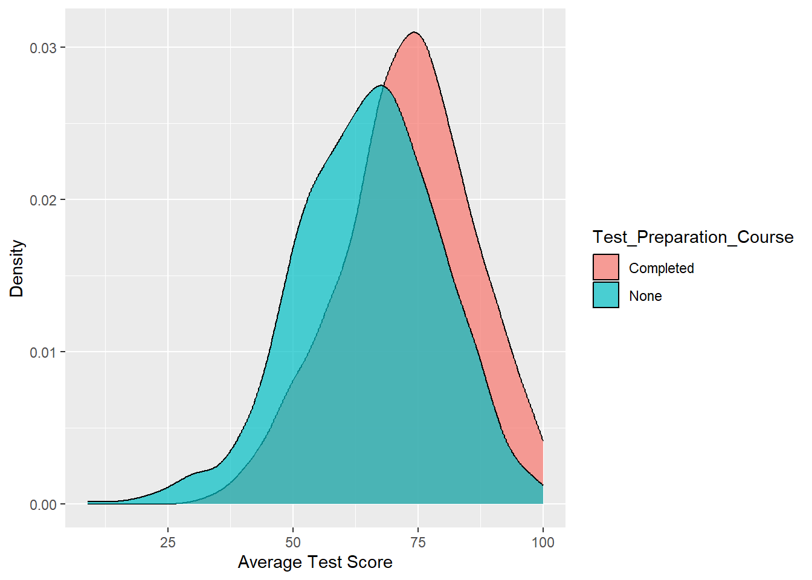

Rows: 1,000
Columns: 9
$ Gender <chr> "Male", "Female", "Female", "Male", "Male"…
$ Race_Ethnicity <chr> "group E", "group E", "group E", "group A"…
$ Parental_Level_Of_Education <chr> "associate's degree", "some college", "bac…
$ Lunch <chr> "Free/Reduced", "Standard", "Standard", "S…
$ Test_Preparation_Course <chr> "Completed", "None", "None", "Completed", …
$ Math_Score <int> 100, 100, 100, 100, 100, 100, 100, 99, 99,…
$ Reading_Score <int> 100, 92, 100, 96, 97, 100, 100, 100, 93, 8…
$ Writing_Score <int> 93, 97, 100, 86, 99, 100, 100, 100, 90, 81…
$ Average_Score <dbl> 98, 96, 100, 94, 99, 100, 100, 100, 94, 89…Data Insights
Glimpse of Study Performance
The variables in the “study_performance” data-set are as the following:
“Gender” to indicate sex of students (female or male)
“Race_Ethnicity” to indicate which racial group the students belong to
“Parental_Level_Of_Education” to indicate students’ parents final education (bachelor’s degree, some college, master’s degree, associate’s degree, high school)
“Lunch” to indicate whether students had their lunch before test (standard or free/reduced)
“Test_Preparation_Course” to indicate whether students had completed their test preparation or not
“Math_Score” to indicate students’ score in Maths
“Reading_Score” to indicate students’ score in Reading
“Writing_Score” to indicate students’ score in Writing
“Average_Score” to indicate students’ average score from all tests combined
Comparing Score by Gender
By comparing scores, we can identify any gaps in academic performance between genders. This analysis can reveal whether one gender consistently outperforms the other in certain subjects or overall academic achievement.
Comparing Score by Gender, on average
As seen on the plot below, the median score appears to be higher for females than for males. However, the spread of scores appears to be larger for males than for females.
Comparing Score by Gender, in each subjects (Math, Writing, Reading)
However, upon looking how both genders scored in each subjects, we learned that the median score is higher for males than females in Math. On the other hand, females still tend to score higher than males in the two other subjects (Writing and Reading).
Pre-test Lunch: Does it matter?
According to Anderson et al. (2017), students with free or reduced-price lunches experienced more positive impact on test scores compared to those with standard lunches. Here, I will test whether students who ate free or reduced-price lunches indeed do better on tests than those who had standard lunches.
Based on the violin plot above, it appears that students with standard lunch has a higher median score than students who had free/reduced-price lunch. The violin for “standard lunch” is also narrower than the violin for “free/reduced lunch”, which means the scores in the “standard lunch” group are more clustered together. The tails of the violins are about the same length, which means the spread of the data is similar in both groups. In short, the violin plot suggests students who had standard lunch might score higher than those with free or reduced-price lunch.
Do well-prepared students always score higher than those who didn’t prepare?

The group labeled “Completed” appears to have a higher average test score than the group labeled “None”. The average score for the “Completed” group is around 75, while the average score for the “None” group is closer to 50. Overall, the graph suggests that taking a test preparation course may be associated with higher test scores.
More support: T-Tests
When in doubt, do a T-test and let the numbers prove it: